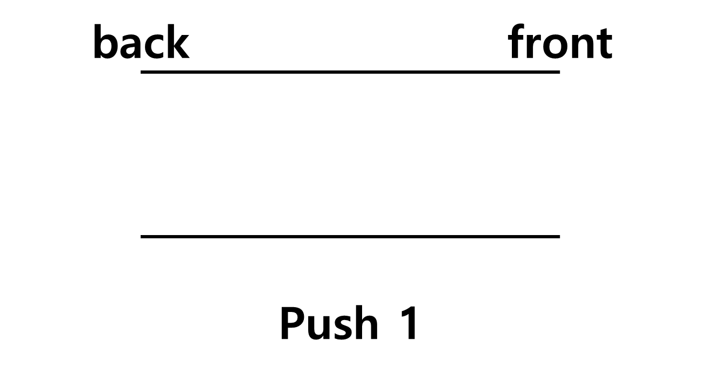

#1025
큐
문제
아래의 쿼리를 처리하는 큐를 구현해 보자.
사용 언어의 라이브러리 상에 큐가 존재한다면 비교적 쉽게 해결할 수 있을 테지만, 한 번쯤 직접 구현해 보는 것도 좋은 경험이 된다.
- $push$ $x$ : 큐에 정수 $x$를 삽입한다. $(1 ≤ x ≤ 1,000)$
- $front$ : 큐에서 가장 앞에 있는 정수를 출력한다. 만약 큐가 비어 있다면, $-1$을 출력한다.
- $back$ : 큐에서 가장 뒤에 있는 정수를 출력한다. 만약 큐가 비어 있다면, $-1$을 출력한다.
- $pop$ : 큐에서 가장 앞에 있는 정수를 제거한다. 만약 큐가 비어 있다면, 아무것도 수행하지 않는다.
-
$size$ : 큐에 들어있는 정수의 개수를 출력한다.
- $empty$ : 큐가 비어 있다면 $1$을, 비어 있지 않다면 $0$을 출력한다.

입력
첫째 줄에 쿼리의 개수 $Q$가 주어진다. $(1 ≤ Q ≤ 50,000)$
둘째 줄부터 $Q$개의 줄에 걸쳐 임의의 쿼리가 주어진다.
둘째 줄부터 $Q$개의 줄에 걸쳐 임의의 쿼리가 주어진다.
출력
출력을 요구하는 쿼리가 주어질 때마다, 그에 맞는 답을 차례대로 출력한다.
예제
예제 입력
10 push 1 push 2 front back push 3 size empty pop pop back
예제 출력
1 2 3 0 3